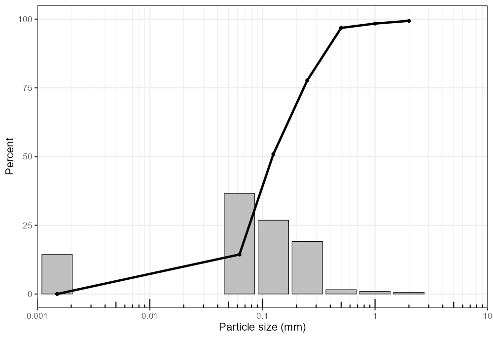
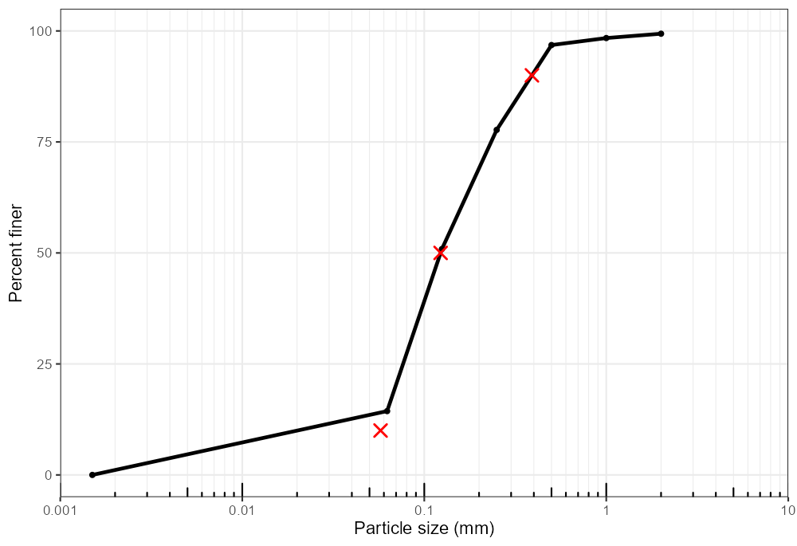
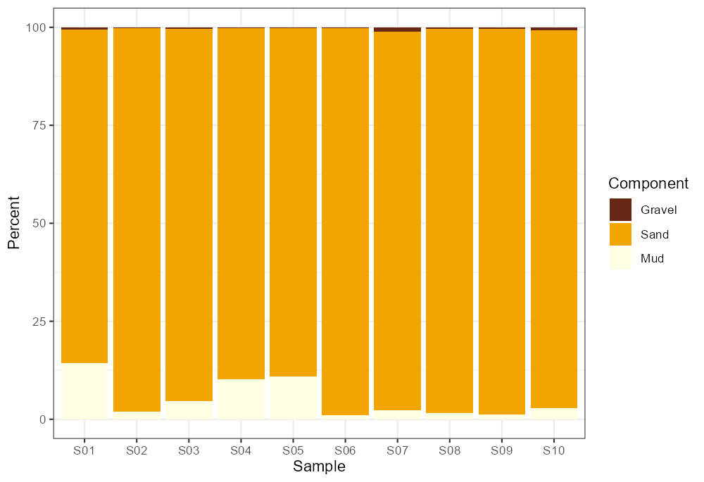
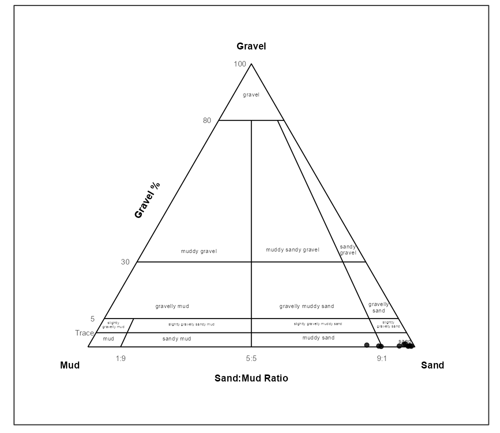
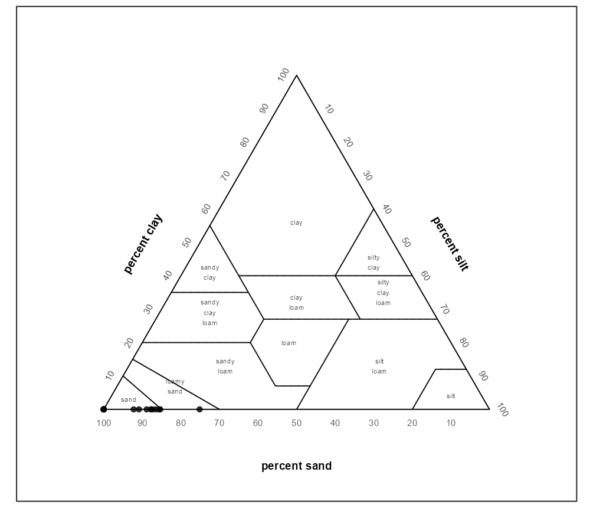

grainsizeR provides R tools for sediment grain-size analysis. It reads retained grain-size distributions, validates them as gsd_tbl objects, calculates D-values and common summary statistics, builds particle-size fraction summaries, classifies supported texture systems, and creates distribution, cumulative, fraction, and texture ternary plots.
Installation
install.packages("remotes")
remotes::install_github("Gavin987/grainsizeR")grainsizeR is under active development. Built-in official texture polygon datasets are not bundled yet; USDA major texture and GRADISTAT-style texture classification are available through internal rule helpers.
Quick Start
The bundled examples include a wide dry-sieve table and a long-format sieve-plus-hydrometer table.
library(grainsizeR)
wide_path <- system.file("extdata", "grain.wide.csv", package = "grainsizeR")
long_path <- system.file("extdata", "grain.long.csv", package = "grainsizeR")
wide <- read_gsd(wide_path, format = "wide")
long <- read_gsd(long_path)Once imported, use the same object with summary and plotting functions:
gs_diagnostics(wide, output = "summary")
gs_d_values(long, probs = c(10, 50, 90), extrapolate = "warn_linear")
gs_folk_ward(long, extrapolate = "warn_linear")
gradistat_components <- gs_fractions(wide, scheme = "gravel_sand_mud")
gs_fractions_wide(wide, scheme = "gravel_sand_mud")Grain-Size Plots
Distribution and cumulative plots are single-sample displays. Select one sample with sample = 1 or sample = "S01", then loop over samples or arrange returned plots externally for multi-sample figures. Metric plots use a log10 particle-size axis in millimetres by default; particle_unit = "um" displays micrometres.
plot_distribution(wide, sample = 1, cumulative = TRUE)
plot_cumulative(
wide,
sample = "S01",
show_percentiles = TRUE,
extrapolate = "warn_linear"
)
samples <- unique(wide$sample_id)
plots <- lapply(samples, function(id) {
plot_distribution(wide, sample = id)
})

Fraction Summaries
The dry-sieve wide example demonstrates the GRADISTAT-style Gravel/Sand/Mud workflow. More detailed Wentworth-style fractions are available when the input resolves the required class boundaries.
plot_fractions(
wide,
scheme = "gravel_sand_mud",
sample = 1:10,
fill_palette = "YlOrBr"
)
Texture Ternary Plots
Fraction schemes convert grain-size data into particle-size components; ternary bases are the three components drawn on a plot; texture systems are the classification or diagram style. For GRADISTAT-style ternary plots, first summarize to the gravel_sand_mud fraction scheme, then plot those summarized gravel, sand, and mud components. Canonical component names are lowercase snake_case; simple case variants such as Sand or SAND are normalized internally. USDA ternary plots use summarized sand, silt, and clay components and the 12 major USDA texture classes.
gradistat_components <- gs_fractions(wide, scheme = "gravel_sand_mud")
usda_components <- gs_fractions_wide(long, scheme = "usda_tt", normalize = "fine_earth")
plot_texture_ternary(gradistat_components, scheme = "gradistat")
plot_texture_ternary(usda_components, scheme = "usda_tt", show_sample_labels = TRUE)

Parameter Summaries
gs_parameters() collects common grain-size outputs into ordinary R tables for reporting or export with standard R tools.
summary <- gs_parameters(
long,
parameters = c("d_values", "indices", "folk_ward", "fractions"),
fraction_scheme = "gradistat",
extrapolate = "warn_linear"
)
write.csv(summary, "grain_size_summary.csv", row.names = FALSE)End-to-End Workflow
The full vignettes show complete workflows. A compact analysis usually reads data, checks resolvability, calculates statistics, then creates figures:
long <- read_gsd(long_path)
gs_diagnostics(long, output = "summary")
gs_parameters(
long,
parameters = c("d_values", "indices", "folk_ward", "fractions"),
fraction_scheme = "gradistat",
extrapolate = "warn_linear"
)
plot_distribution(long, sample = "S01", cumulative = TRUE)
plot_cumulative(long, sample = "S01", extrapolate = "warn_linear")
plot_fractions(long, scheme = "wentworth_major")
usda_components <- gs_fractions_wide(long, scheme = "usda_tt", normalize = "fine_earth")
plot_texture_ternary(usda_components, scheme = "usda_tt")plot_texture_triangle() remains available as a stable compatibility name for texture ternary plots; plot_texture_ternary() is preferred in new code.
Further Reading
Use the vignettes for full workflows and methodological detail:
-
vignette("grain-size-workflow"): import, diagnostics, summaries, and plots. -
vignette("texture-classification"): USDA and GRADISTAT-style texture classification and ternary plots. -
vignette("replacing-gradistat-g2sd"): R-native workflows for tasks commonly handled with GRADISTAT or G2Sd-style analysis. -
vignette("method-validation"): interpolation conventions, open-tail behavior, and numerical validation examples.
Function documentation gives argument-level detail, including explicit extrapolation and open-ended class handling.
License and Development Status
grainsizeR is licensed under the MIT License. Package code and original package documentation are MIT-licensed.
The package is in active development. It does not copy GRADISTAT VBA code, G2Sd source code, workbook layouts, soiltexture code, or bundled official texture polygon coordinates. Built-in official texture polygon datasets may be added only after independent source review, reconstruction, validation, tests, and documentation.
The public provenance notes document source boundaries before any future built-in texture polygon dataset is considered.